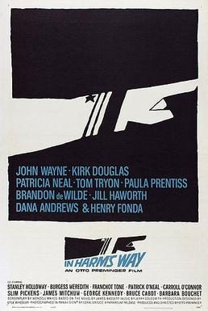

In Harm's Way
Studio: Otto Preminger Film
Starring: John Wayne, Kirk Douglas, Henry Fonda
Director: Otto Preminger
Writer: Wendell Mayes
Producer: Otto Preminger
In Harm's Way is a 1965 American epic historical romantic war film produced and directed by Otto Preminger and starring John Wayne, Kirk Douglas, and Patricia Neal. The supporting cast featured Henry Fonda in a lengthy cameo, Tom Tryon, Paula Prentiss, Stanley Holloway, Burgess Meredith, Brandon deWilde, Jill Haworth, Dana Andrews, and Franchot Tone.
Trivia
- Nominated for: Academy Award for Best Cinematography, Black-and-White.
- Based on Harm's Way (1962 novel by James Bassett).
- Wendell Mayes, who wrote the script, had worked on the project when Preminger was in Europe, and then paused on it when the film was called off.
- Mayes wanted John Wayne to die at the end while the son lived but Otto Preminger felt audiences would not accept John Wayne dying.
- I could have written a picture about the character that Douglas played.
Filming Locations
- San Diego
- Ford Island
- Marine Corps Air Station Kaneohe Bay
- Honolulu
- San Francisco
- USS Braine
- USS Capitaine
- USS O'Bannon
- USS Philip
- USS Renshaw
- USS Saint Paul
- USS Walker
Previous Showings
1 Run • 1 Festival
All runs on record (1):
- May 15, 2009John Waynew/ The Wings of Eagles